Setup Auto Labeling
In this tutorial, you will learn how to set up and use the auto-labeling feature. Auto-labeling is a feature that automates labeling using the Web API. This is not required to use doccano, but if you set it up, you will be able to label data more efficiently.
The tutorial is divided into several sections:
- Select a Template will give you a starting point to follow the tutorial.
- Set Request Parameters will teach you how to set parameters required to send a request.
- Specify Response Mapping will teach you the way to extract the label information from the response.
- Specify Label Mapping will give you the way to map the extracted labels to the internal labels of doccano.
- Enable the Feature will show you how to enable the auto-labeling.
In this tutorial, we will show you how to set up auto-labeling using Amazon Comprehend Sentiment Analysis as an example. Therefore, we assume that you have a text classification project in doccano, an AWS account and be able to generate access keys.
Use pre-defined service
Select a Template
First, move to the "settings" page and open "Auto Labeling" tab. The new tab should display a "Create" button and an empty table. Click the button and select "Amazon Comprehend Sentiment Analysis" from the dropdown menu:
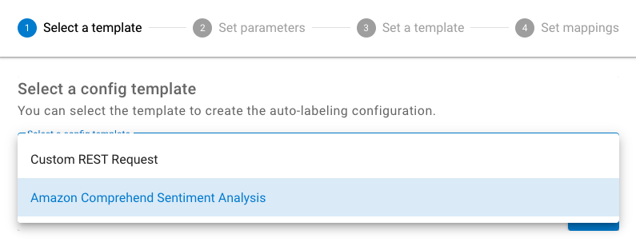
Set Request Parameters
Next, you need to set parameters to send an API request. In the case of Amazon Comprehend Sentiment Analysis, the following parameters are required:
- aws_access_key
- aws_secret_access_key
- region_name
- language_code
In the following example, we set us-west-2 as a region_name and en as a language_code:
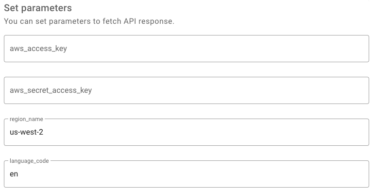
Then, we will test them using the sample text to make sure whether the parameters are set correctly or not. In this case, we set "I like you" as a sample text and be able to get the response from Amazon Comprehend Sentiment Analysis. If you look at the Sentiment field in the response, you will see that its value is POSITIVE:
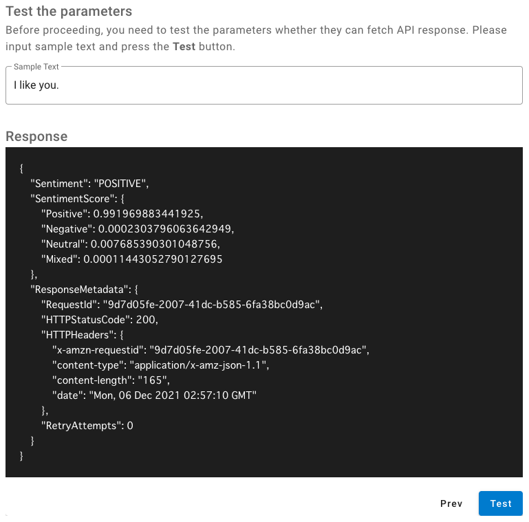
Specify Response Mapping
Now, you can successfully fetch the API response. Next, you need to convert it to doccano format(below) with the mapping template(Jinja2 format).
Text Classification
[{ "label": "Cat" }, ...]
Sequence Labeling
[{ "label": "Cat", "start_offset": 0, "end_offset": 5 }, ...]
Sequence to sequence
[{ "text": "Cat" }, ...]
In the case of Amazon Comprehend Sentiment Analysis, we want to get Sentiment value from the response. As we can access the entire response by the input variable, the mapping template looks like the following:
[
{
"label": "{{ input.Sentiment }}"
}
]
After setting the template, we will test them using the sample response. This response is the same one we fetched in the Set Request Parameters section.
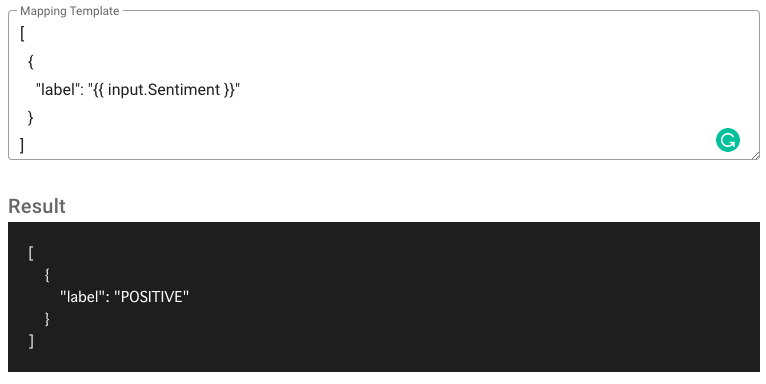
Specify Label Mapping
Once you specify the mapping template, you need to convert the label in the response into the one you defined at the label page.
Click the Add button and fill in the From and To fields. From means the response label string. In this case, we can specify POSITIVE. To means the label of this project. In this case, we specify positive:
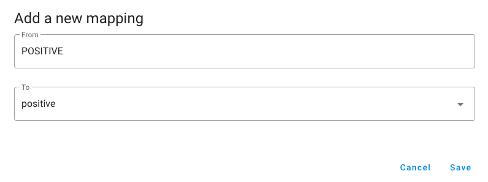
After adding the label mapping, we will test them using the sample response:
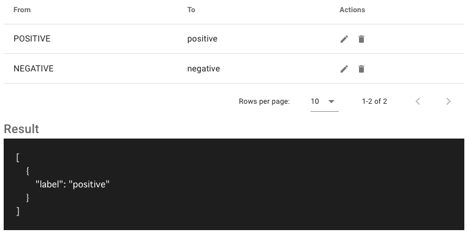
Enable the Feature
Finally, move to the "annotation" page and click "Auto Labeling" button. It should display a "Slide" button for switching enable/disable auto-labeling feature. Try to enable it:
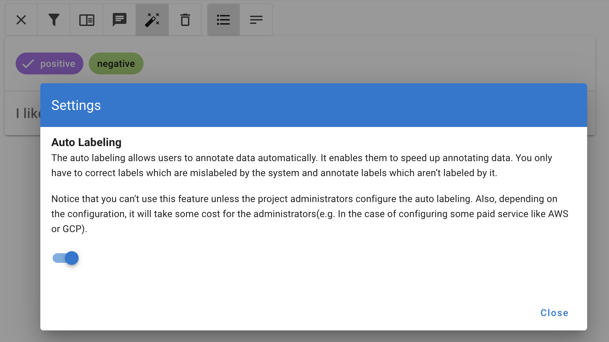
Each time you view a new document, it will be labeled automatically.
Use your own API
First, select "Custom REST Request":
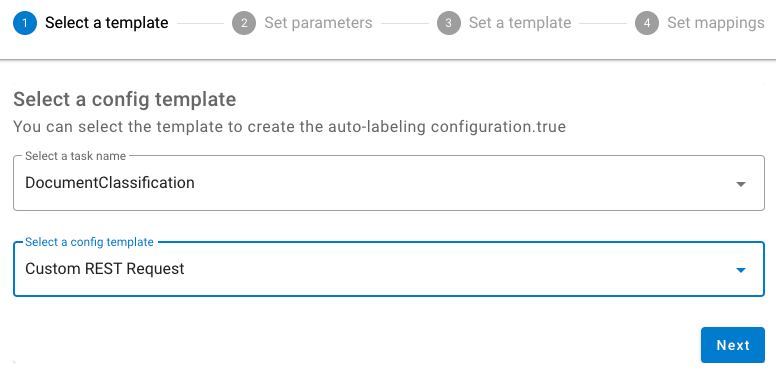
Next, you need to build your own API. Any framework can be used. Here we will use Flask to create a minimal application. This application always returns the same label（{"label": "NEG"}）. We also call get_json method and output its return value to make sure we can receive the data.
from flask import Flask, request
app = Flask(__name__)
@app.route("/", methods=["POST"])
def predict():
print(request.get_json())
return {"label": "NEG"}
Save it as hello.py or something similar. Make sure to not call your application flask.py because this would conflict with Flask itself.
To run the application, use the flask command. You need to tell the Flask where your application is with the --app option.
$ flask --app hello run
* Serving Flask app 'hello'
* Debug mode: off
* Running on http://127.0.0.1:5000
Press CTRL+C to quit
OK. Let's return to doccano.
Next, you need to set parameters(url and method). Let's set the Flask application's URL and method:
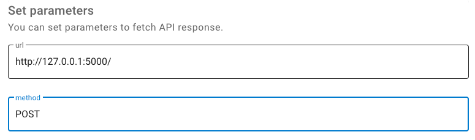
Next, select the add button next to Body. Enter text as key and {{ text }} as value. This value is a placeholder and will actually be replaced by your own text.
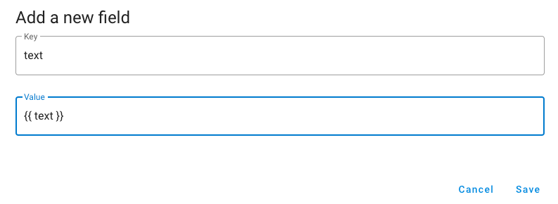
Then, test the parameters with the sample text. If it is working correctly, it should return {"label": "NEG"}.
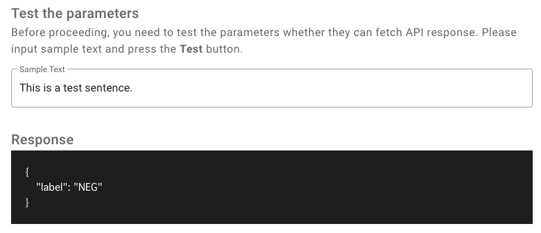
You should also see the following in the console:
127.0.0.1 - - [13/Sep/2022 15:19:57] "GET / HTTP/1.1" 405 -
{'text': 'This is a test sentence.'}
Next, convert the response from your API into a format that doccano can handle. We can access the response by the input variable. The mapping template looks like the following:
[
{
"label": "{{ input.label }}"
}
]
Test the mapping template. If it is working correctly, it should be as follows:
[
{
"label": "NEG"
}
]
The rest is the same as when using a predefined service.